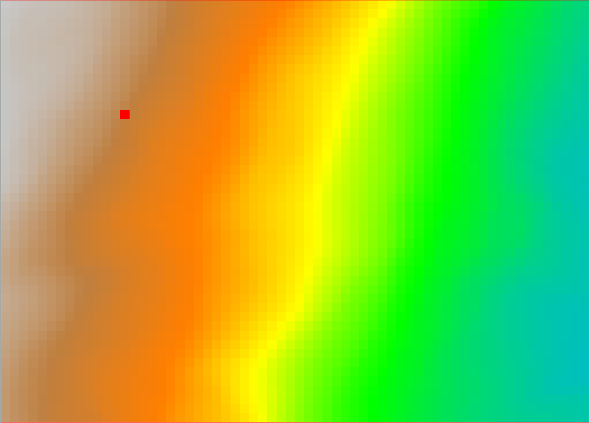
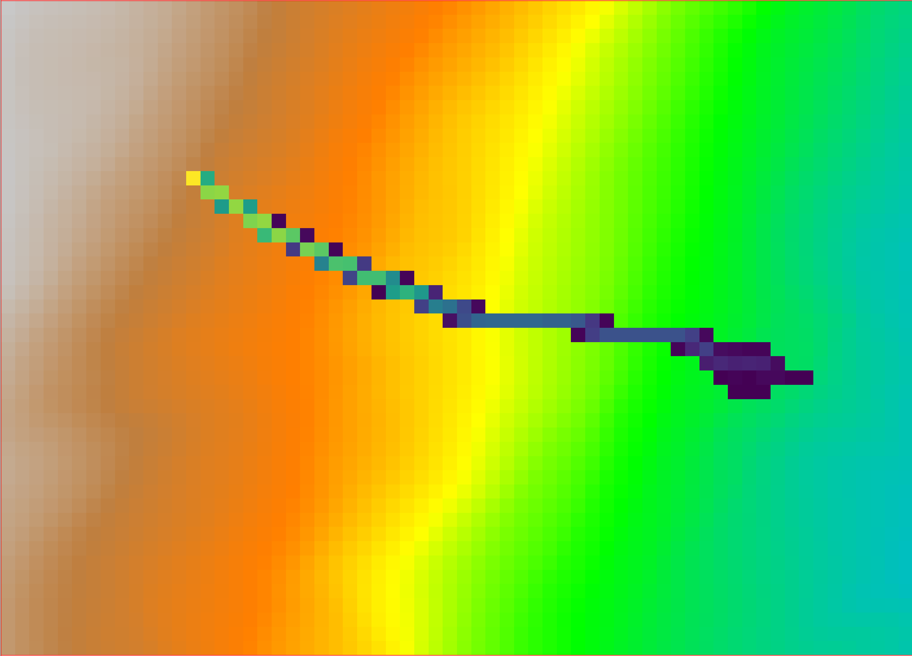

The module r.stone is a GRASS implementation of the model STONE [1] for three-dimensional modeling of rockfall trajectories. A rockfall is a point-like block, by assumption, and the model simulates its trajectory as a sequence of falling, bouncing and rolling steps. The trajectory follows a digital elevation model, it starts from a user-defined source point(s) with a non-null initial velocity and stops downhill when all of its kinetic energy is loss (i.e., when it reaches a minimum velocity) by bouncing and/or rolling on the ground. The Coefficients of normal and tangential restitution describe the amount of kinetic energy lost in each bounce, and a friction coefficient describes the kinetic energy loss during rolling. The r.stone implementation of STONE requires a minimal set of input raster maps in addition to the DTM, including a map of sources, and three maps of numerical coefficients. The output is a raster map with values corresponding to the number of trajectories crossing each grid cell after a full simulation.
Input DTM is a square fixed spaced DTM, used as a triangular regular network built on the fly at run-time. Rockfall trajectories are evaluated using parametric second-order equations after a roto-transformation of the coordinate system to the run-time triangle. The calculation of each trajectory includes the random selection of an initial direction angle, and of cell-by-cell values of restitution and friction coefficients extracted from Gaussian distributions centered on the values specified in the corresponding input raster and limited by +/- 10% from the central value. By virtue of the random selection of initial angle and parameters, and of the possibility of simulating many trajectories from each source cell, the output assumes a probabilistic meaning.
The input parameters of r.stone listed below are all mandatory. Generating a map of source locations requires either knowledge of the area, gained through field campaigns or aerial photos, or a sound statistical method. A simplistic method to estimate the location of sources is to consider locations on steep terrain as possible rockfall sources, for example:
bash
g.region rast=dem
r.slope.aspect –e elevation=dem slope=slope
r.mapcalc “sources = if(slope>50,10,null())”
to simulate 10 trajectories originating from each cell with slope larger than 50 degrees.
Raster maps of friction and restitution coefficients can be generated based on geo-lithological knowledge of the area. Assuming a geological map, in polygonal vector format, with classes similar to the table below, we generate the input raster maps as follows:
bash
v.db.addcolumn map=geology columns='friction real, nrest integer, vrest integer'
db.execute sql=”update geology set friction=0.65 where class_id=1”
db.execute sql=”update geology set friction=0.80 where class_id=2”
...
v.to.rast input=geology use=attr attribute_column=friction output=friction
And similar operations for nrest and vrest, for all classes present in the geology map. The actual model run is as follows:
bash
r.stone dem=dem sources=sources_raster nrest=nrest_raster
trest=trest_raster friction=friction_raster stop_vel=1
counter=out_counter_raster
Where:
The following table, extracted from [1], gives example values of restitution and friction coefficients corresponding to 19 lithological classes used in Italy.
| Lithological class | Friction | Normal restitution | Tangential restitution |
|---|---|---|---|
| Anthropic deposits | 0.65 | 35 | 55 |
| Alluvial, lacustrine, marine, eluvial and colluvial deposits | 0.80 | 15 | 40 |
| Coastal deposits, not related to fluvial processes | 0.65 | 35 | 55 |
| Landslides | 0.65 | 35 | 55 |
| Glacial deposits | 0.65 | 35 | 55 |
| Loosely packed clastic deposits | 0.35 | 45 | 55 |
| Consolidated clastic deposits | 0.40 | 55 | 65 |
| Marl | 0.40 | 55 | 65 |
| Carbonates-siliciclastic and marl sequence | 0.35 | 60 | 70 |
| Chaotic rocks, mélange | 0.35 | 45 | 55 |
| Flysch | 0.40 | 55 | 65 |
| Carbonate Rocks | 0.30 | 65 | 75 |
| Evaporites | 0.35 | 45 | 55 |
| Pyroclastic rocks and ignimbrites | 0.40 | 55 | 65 |
| Lava and basalts | 0.30 | 65 | 75 |
| Intrusive igneous rocks | 0.30 | 65 | 75 |
| Schists | 0.35 | 60 | 70 |
| Non–schists | 0.30 | 65 | 75 |
| Lakes, glaciers | 0.95 | 10 | 10 |
The following figures show the output of the r.stone module, initialized with an individual source point.
A sample portion of a 10m x 10m resolution DEM, with one grid cell (red square) acting as a rockfall source point, with raster value 100: the effect on the model r.stone is to simulate 100 trajectories starting from that cell.
Sample output of r.stone, depicting the counter raster map; the values of the raster output correspond to the total number of simulated trajectories going through that cell.
[1] The algorithm is based on the work of Fausto Guzzetti, Giovanni Crosta, Riccardo Detti, Federico Agliardi (2002): STONE: a computer program for the three-dimensional simulation of rock-falls. Computers & Geosciences, 28(9), 1079-1093. https://doi.org/10.1016/S0098-3004(02)00025-0
[2] Example coefficients for r.stone are in: M. Alvioli et al. (2021): Rockfall susceptibility and network-ranked susceptibility along the Italian railway. Engineering Geology, 293, 106301. https://doi.org/10.1016/j.enggeo.2021.106301
Fausto Guzzetti and Massimiliano Alvioli
Translation from the original code and adaptation to GRASS GIS by Andrea Antonello